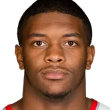

Played 1 season for 2 teams; his teams went 1–4 in his games.
Jump to: Record by opponent · Season by season · Teammate help
Compare Chaundee Brown with…
Final NBA finish, season by season
Title Finals Other playoffs Missed playoffs. #1 = champion; the dashed line is last place that season. Each point opens that season's final standings.
All 30 teams ranked in 2021-22, his best finish (#15)Teammate help
 Trae Young3.01 season
Trae Young3.01 season
Career
Career records (W–L, W − L, with and without) include 2026-27 games through Nov. 24, 2026; season counts and finishes are through 2025-26. Each card opens its board in the same scope. How we count.

Latest completed seasons
Season by season
Newest first; every header sorts. Final NBA finish is the team's rank among all teams that season (#1 = champion) and opens that season's standings. "Without him" uses the team-season window; the span line counts only the games between his first and last game for the team.
On/off, starts and close games
From the lineup data, 1996-97 on. On/off is net points per 100 possessions with him on the floor minus off, a different unit from the win-rate gaps. Started and off the bench are team records in those games; close games are those within 5 points in the last 5 minutes with him on the floor.
Teammate help by season
Help this season = Teammates Score points for honors won that season by teammates who shared a game with him, with every teammate that adds to it. Only honors won in that same season count. How help works.
- 2021-22
 LA Lakers
LA Lakers
 LeBron James All-NBA 3rdAll-Star32 g
LeBron James All-NBA 3rdAll-Star32 g
Help this season: 3 = 3 LeBron James
Other teammates (no honors that season): Carmelo Anthony 2 g, Isaiah Thomas 2 g, Wayne Ellington 2 g, DeAndre Jordan 2 g, Russell Westbrook 2 g, Rajon Rondo 2 g, Trevor Ariza 1 g, Kent Bazemore 1 g, Anthony Davis 1 g, Jay Huff 1 g
- 2021-22
 Atlanta
Trae Young All-NBA 3rdAll-Star33 g
Atlanta
Trae Young All-NBA 3rdAll-Star33 g
Help this season: 3 = 3 Trae Young
Other teammates (no honors that season): Clint Capela 3 g, Lance Stephenson 3 g, Skylar Mays 3 g, Cam Reddish 3 g, Malcolm Hill 2 g, Cameron Oliver 2 g, Wesley Iwundu 2 g, Anthony Barber 2 g, Bogdan Bogdanovic 1 g, Gorgui Dieng 1 g, Louis Williams 1 g
Record against each opponent
Regular season, through 2025-26 (2026-27 games not included): 5 games, 1–4, against 3 franchises.
Grouped by franchise (named as today); game lists keep each team's name that season. Filters and the tab are kept in the URL, so a filtered view can be shared.
| Games list | |||||||
|---|---|---|---|---|---|---|---|
| 3 | 0–3 | 0.0% | −3 | N/A | 2021-22 | ||
| 1 | 1–0 | 100.0% | +1 | N/A | 2021-22 | ||
| 1 | 0–1 | 0.0% | −1 | N/A | 2021-22 |
Rows add up to his career record in his games. A playoff series counts when he played in it; early round-robin games show as games only. How we count.
Arrival and departure
Team wins per 82 games the season before he arrived vs his first season there, and his last season vs the season after he left. He leaves a team only when his next season with games is for another team (or he never plays again); whole seasons he missed and came back from are one "Missed" row with the team's record without him. Per 82 so short seasons compare fairly. These are team records, not a measure of what he did.
| Left | after 2021-22 | 2021-22: 33–49 33.0 per 82 | 2022-23: 43–39 43.0 per 82 without him | +10.0 wins | |
| Left | after 2021-22 | 2021-22: 43–39 43.0 per 82 | 2022-23: 41–41 41.0 per 82 without him | −2.0 wins | |
| Debut | 2021-22 | 2020-21: 42–30 47.8 per 82 | 2021-22: 33–49 33.0 per 82 | −14.8 wins | |
| Arrived | 2021-22 | 2020-21: 41–31 46.7 per 82 | 2021-22: 43–39 43.0 per 82 | −3.7 wins |
Seasons split between teams
Each team's record before his first game for it, inside his window (games with and without him) and after his last game, in the seasons he played for two or more teams.
With and without his teammates
His 12 teammates with the most regular-season games together. "Together" is the team's record in the games both played for it; "Without him" is the team's record in the games Chaundee Brown played for that team while the teammate was on it (between the teammate's first and last game for the team, the appearance span) and the teammate did not play. Fewer than 20 games without him: no gap. Games through Nov. 24, 2026. How we count.
- Trae YoungAtlanta 2021-22
- Together
- 1–2 33.3%
- Without him
- N/A N/A
- Gap
- Too few games without him
 Cam ReddishAtlanta 2021-22
Cam ReddishAtlanta 2021-22- Together
- 1–2 33.3%
- Without him
- N/A N/A
- Gap
- Too few games without him
 Skylar MaysAtlanta 2021-22
Skylar MaysAtlanta 2021-22- Together
- 1–2 33.3%
- Without him
- N/A N/A
- Gap
- Too few games without him
 Lance StephensonAtlanta 2021-22
Lance StephensonAtlanta 2021-22- Together
- 1–2 33.3%
- Without him
- N/A N/A
- Gap
- Too few games without him
 Clint CapelaAtlanta 2021-22
Clint CapelaAtlanta 2021-22- Together
- 1–2 33.3%
- Without him
- N/A N/A
- Gap
- Too few games without him
 Wesley IwunduAtlanta 2021-22
Wesley IwunduAtlanta 2021-22- Together
- 1–1 50.0%
- Without him
- 0–1 0.0%
- Gap
- Too few games without him

Cameron OliverAtlanta 2021-22- Together
- 1–1 50.0%
- Without him
- N/A N/A
- Gap
- Too few games without him
- Anthony BarberAtlanta 2021-22
- Together
- 0–2 0.0%
- Without him
- N/A N/A
- Gap
- Too few games without him
 Malcolm HillAtlanta 2021-22
Malcolm HillAtlanta 2021-22- Together
- 0–2 0.0%
- Without him
- N/A N/A
- Gap
- Too few games without him
 Rajon RondoLA Lakers 2021-22
Rajon RondoLA Lakers 2021-22- Together
- 0–2 0.0%
- Without him
- N/A N/A
- Gap
- Too few games without him
 Russell WestbrookLA Lakers 2021-22
Russell WestbrookLA Lakers 2021-22- Together
- 0–2 0.0%
- Without him
- N/A N/A
- Gap
- Too few games without him
 DeAndre JordanLA Lakers 2021-22
DeAndre JordanLA Lakers 2021-22- Together
- 0–2 0.0%
- Without him
- N/A N/A
- Gap
- Too few games without him